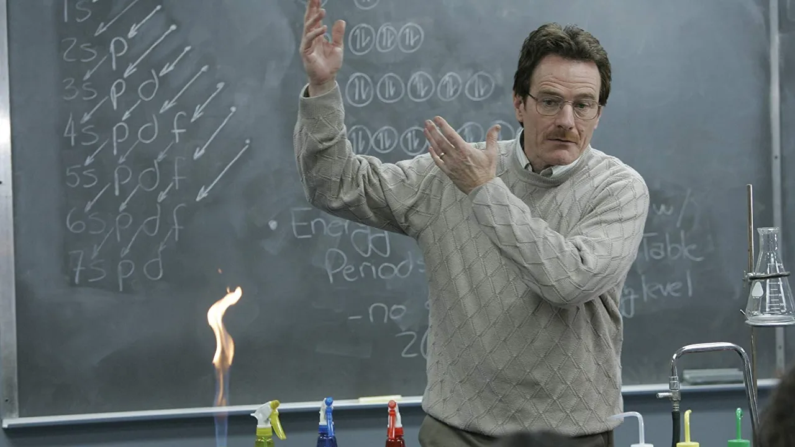
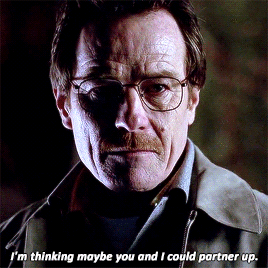
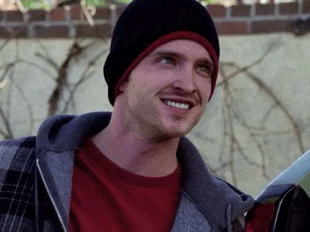
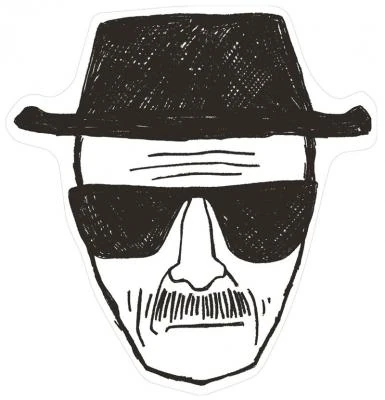
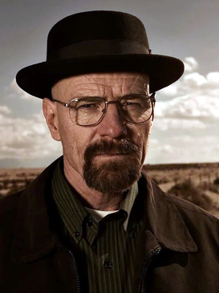
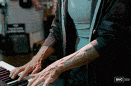

Breaking Bad, en resumidas cuentas, nos narra durante 5 temporadas la historia de Walter White, un profesor de química extremadamente inteligente que trabaja en un colegio en Albuquerque, Nuevo México.
La historia comienza cuando Walter, a sus 50 años, se entera de que tiene cáncer de pulmón y que, en el mejor de los casos y con quimioterapia, le quedan aproximadamente dos años de vida.
Hasta aquí la historia nos puede provocar cierta clase de tristeza, pero la serie trata de ponernos en el lugar de esta persona. Walter no era simplemente un profesor cualquiera: era alguien extremadamente inteligente que incluso había contribuido a una investigación que terminó siendo reconocida con un Premio Nobel.
Además, fue cofundador de una empresa llamada Gray Matter Technologies, empresa de la cual vendió su participación por apenas 5,000 dólares cuando todavía estaba comenzando. Años después, esa misma empresa llegó a estar valorada en aproximadamente 2.16 mil millones de dólares.
Entonces tenemos a alguien que pudo haber sido increíblemente exitoso y millonario, pero que ahora está viejo, trabaja como profesor de química —e incluso tiene un segundo empleo en un lavado de autos para poder mantener a su familia— y se acaba de enterar de que su vida está a punto de acabar, que prácticamente ya tiene una fecha asegurada.
Quiero aclarar que no quiero narrar toda la historia, principalmente porque no la recuerdo perfectamente porque vi la serie hace más de 4 años, y también porque esta misma es bastante larga y compleja. Más que contar todo lo que pasa, quiero hablar de lo que me parece interesante de ella.
Un día, durante el cumpleaños de Walter, su cuñado Hank Schrader, quien es agente de la DEA, aparece en televisión hablando sobre una redada a un laboratorio clandestino de metanfetamina.
En la noticia se puede ver la enorme cantidad de dinero que mueve este negocio, algo que llama bastante la atención de Walter.
Hank, medio en broma, le ofrece a Walter acompañarlo algún día a una redada para que vea cómo trabajan y tenga algo de “emoción” en su vida. Tiempo después Walter acepta.
Durante esta redada, mientras la DEA entra a una casa utilizada como laboratorio, Walter se queda esperando afuera y ve a una persona escapando por una ventana. Resulta que la reconoce: era un exalumno suyo. Se puede predecir más o menos lo que pasó por la mente de Walter en ese momento, y también que este punto es el inicio de toda la gran historia.
Walter decide ir a buscar a este estudiante y le propone algo bastante fuera de lo común, o al menos completamente inesperado viniendo de alguien como él:
“Im thinking maybe you and I could partner up”

Básicamente, Walter le propone que trabajen juntos fabricando y vendiendo metanfetamina. Walter posee el conocimiento químico necesario para fabricar un producto de una calidad extremadamente alta, mientras que esta otra persona conoce el negocio, sabe cómo venderlo y, sobre todo, sabe a quién vendérselo.
Aunque hay otro pequeño detalle: Walter prácticamente lo obliga a aceptar, porque le deja dos opciones bastante simples: trabajar con él o ser entregado a la policía.
Esta persona, la cual no había mencionado por su nombre hasta ahora, es:
Jesse Pinkman

A partir de aquí, la historia comienza a mostrarnos un cambio, un antes y un después en el desarrollo de Walter.
Walter sí es extremadamente inteligente, pero también es una persona altamente egocéntrica.
En nombre de su familia y bajo el concepto de “dejarles dinero” después de su muerte, comienza a fabricar metanfetamina junto con Jesse.
Sin embargo, el producto de Walter tiene algo especial en comparación con prácticamente todo lo que existía en el mercado: su metanfetamina llega a alcanzar aproximadamente un 99.1 % de pureza.
Esto termina revolucionando el mercado y poco a poco pone en la mente de todo el mundo un nombre. No el de Walter White, obviamente, sino su apodo:
Heisenberg


A partir de aquí nos damos cuenta de cómo Walter evoluciona y cada vez se parece menos a la persona que conocimos al principio. Y aquí está, para mí, una de las cosas más interesantes de Breaking Bad.
Se puede interpretar como que Walter finalmente se siente vivo.
Durante gran parte de su vida fue una persona extremadamente capaz que nunca llegó a demostrar completamente de lo que era capaz. Vio cómo una empresa que él ayudó a fundar se convirtió en una compañía multimillonaria después de que él vendiera su parte por casi nada. Terminó dando clases en un colegio, teniendo problemas económicos y trabajando incluso en un lavado de autos. Y de repente descubre que va a morir.
Entonces comienza haciendo todo “por su familia”, pero poco a poco esa justificación deja de tener sentido. Llega un momento en el que ya tiene suficiente dinero para ellos y, aun así, continúa.
Porque realmente ya no lo hacía únicamente por su familia. También lo hacía por él, por demostrar de lo que era capaz y por demostrar quién era él. Por primera vez sentía que era respetado, temido e importante.
Y justamente ese ego fue lo que terminó destruyendo muchas de las cosas a las que él mismo, gracias a su inteligencia, había logrado llegar.
Sinceramente, uno puede pensar que tremendo humo la serie, que no hay nada genial que rescatar de ella y que al final solamente estamos viendo durante cinco temporadas a un profesor convertirse en narcotraficante.
Sin embargo, creo que la serie va bastante más allá de simplemente mostrarnos la maldad y el ego de Walter, y cómo sus decisiones terminan destruyendo a su familia, provocando la muerte de personas cercanas a él y haciéndolo perder prácticamente todo aquello que había conseguido.
También nos muestra, de una manera bastante cruda, la realidad de las drogas y de las personas que terminan atrapadas en ellas.
Hay un momento de la serie que me parece un ejemplo bastante curioso de esto.
Uno de los amigos de Jesse, Skinny Pete, entra junto a otro personaje a una tienda de instrumentos musicales.
En determinado momento se sienta frente a un piano y comienza a tocar “Solfeggietto”, de Carl Philipp Emanuel Bach, una pieza bastante compleja.

Es una escena muy pequeña y probablemente irrelevante para la historia principal, pero a mí me parece que deja una reflexión bastante interesante:
¿Cuántos talentos se pierden por el vicio?
Porque vemos a Skinny Pete durante prácticamente toda la serie como un drogadicto y delincuente, pero durante unos segundos descubrimos que también es una persona con una habilidad impresionante para la música.
Y creo que ahí se puede sacar algo mucho más grande.
Cuántas personas que pudieron haber sido músicos, artistas, científicos, deportistas o cualquier otra cosa terminan destruyendo sus capacidades por una adicción.
Y muchas veces ese consumo tampoco aparece de la nada.
Puede ser provocado por depresiones, sentimientos, momentos difíciles de la vida o simplemente por el deseo de escapar de una realidad que para muchas personas es demasiado difícil de enfrentar.
Una realidad que el mismo sistema muchas veces vuelve extremadamente difícil de abandonar, mientras que, al mismo tiempo, existen personas dispuestas a aprovecharse económicamente de quienes intentan escapar de ella.
Y prueba de esto también es Jesse.
Jesse gana muchísimo dinero durante la serie, sí, pero probablemente sea uno de los personajes que más pierde.
Walter constantemente lo manipula y lo utiliza para cumplir sus propios objetivos. Jesse pierde amigos, personas que ama, su estabilidad y prácticamente su vida completa.
Incluso llega a enamorarse de Jane, una chica que llevaba 18 meses sin consumir drogas.
Su relación con Jesse termina llevándola nuevamente al consumo y, eventualmente, Jane muere por una sobredosis mientras duerme.
Y lo más fuerte de esa escena es que Walter está ahí.
Tiene la posibilidad de intentar ayudarla.
Pero decide no hacerlo.
Más adelante, Jesse termina literalmente convertido en esclavo de una banda criminal, encerrado y obligado a fabricar la fórmula de Walter para ellos.
Así que al final tenemos una situación bastante irónica. Walter comenzó toda esta historia diciendo que quería asegurar el futuro de su familia antes de morir, pero durante el proceso destruyó a su familia, gran parte de la vida de Jesse, provocó directa o indirectamente una cantidad enorme de muertes y perdió casi todo aquello por lo que supuestamente había comenzado.
Y al final él mismo termina aceptando algo que probablemente el espectador ya había entendido mucho antes: no lo hizo solamente por su familia. Lo hizo porque le gustaba, porque era bueno haciéndolo.
Y porque finalmente se sentía vivo.